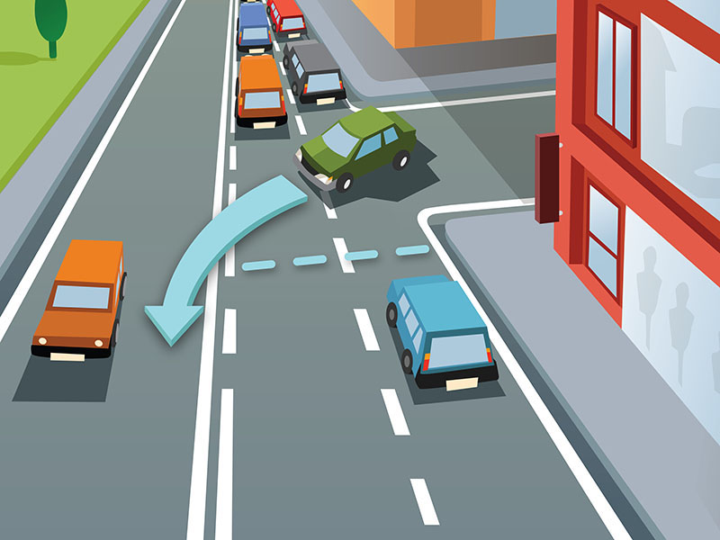

Convivenza civile ed uso responsabile della strada

Esaminiamo qui alcune norme generali di convivenza civile ed uso responsabile della Strada.
Procedendo in fila con altri veicoli:
In caso di traffico intenso o formazione di code è necessario sempre lasciare liberi:
Entrando in un centro abitato bisogna:
Procedendo in fila con altri veicoli:
- bisogna mantenere ugualmente la distanza di sicurezza e quindi non avvicinarsi troppo al veicolo che precede
- non bisogna limitarsi a osservare solamente il veicolo che precede, ma occorre porre attenzione anche in lontananza, per controllare la situazione del traffico
- per agevolare il traffico, è opportuno lasciare liberi gli sbocchi delle strade laterali
- non cambiare ripetutamente corsia o accelerare bruscamente per sorpassare gli altri veicoli
In caso di traffico intenso o formazione di code è necessario sempre lasciare liberi:
- le immissioni stradali (incroci, confluenze, ingressi dei parcheggi, ecc)
- i passaggi a livello e i binari del tram
- gli attraversamenti pedonali e quelli ciclabili
Entrando in un centro abitato bisogna:
- tenere conto che può cambiare spesso la precedenza agli incroci
- tener conto che il flusso della circolazione viene spesso intralciato o interrotto da veicoli che sono fermi, che partono, che cambiano direzione
- tener conto che gli altri utenti della strada (quali pedoni e ciclisti) si mescolano maggiormente con il traffico motorizzato
- essere più attenti, prudenti e tolleranti, a causa del maggior numero di utenti che interagiscono nell'ambiente urbano
- continuare a mantenere la concentrazione alla guida anche se potrebbero aumentare i motivi per distrarsi